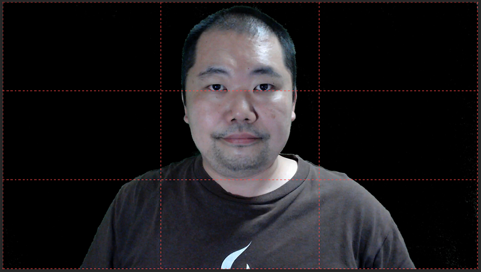

私的オンライン登壇の際に気をつけるべき5つのこと (2020年9月版)
私的オンライン登壇の際に気をつけるべき5つのこと (2020年9月版)
ここ1年ほどはオンライン登壇を効果的に行うにはどうすればいいのか、を考えながら仕事をしてきました。
このエントリはオンライン登壇をするスピーカーにとって重要なことについてこれまで色々調査してきた内容のうち、私なりに比較的気づきにくいけれど簡単に対処できると思うものを5つほどまとめたものです。間違っていることもあるかもしれませんが、それらはコメント等でおしえてください。
またこのエントリの内容をまとめようと思った動機は以下のPyConAUの動画です。内容も参考にしていますので、英語が大丈夫な方はそちらもご確認ください。
1. スライドの内容・情報量
まずYouTube等で登壇を視聴する人が50インチ型テレビで見ている可能性は非常に低いということを理解しましょう。ほとんどの人はスマホ、タブレット、PCで視聴します。そしていくつかの調査によれば、YouTubeをスマホだけで視聴する人はどの世代でも50%以上となり、若い世代では80%を超えるという結果もでています。
動画を視聴する層は画面を見ていないか（これは自分が画面が小さいデバイスではあまり画面を見なくても済む動画しかみてない、という理由からの想像です）、見ていても視聴するための画面は想像以上に小さい、ということです。またiPad Proのような大きめのタブレットで視聴していたとしても、画面全体を利用して視聴しているとは限らないというわけです。
画面が小さいということは、スライドの内容を字・情報でうめても視聴者は読めないということです。またスライドを素早くページ送りしていっても情報は伝わりません。単位時間あたりの視覚的情報量は抑える必要があります。
一度に与える情報量が多すぎてもYouTube等のメディアでは伝わりません！
そのため以下の注意をしながらスライドを作りましょう。
- 字を使う場合はフォントを大きめにし、文字量を可能な限り控える
- 可能な場合は図・絵で表現する
2. トランジション・アニメーション
スライドとスライドの間のトランジションにもご注意ください。
特にスピードの速いトランジション・アニメーションは動画のコンプレッション方式やネットワーク遅延によって録画側ではボロボロになって保存される可能性が高いです。
もしどうしてもアニメーションを使いたい場合は主催者側と録画方式をちゃんと確認したほうがよいでしょう。スピーカーが自分でスライドを録画するなど、ちょっとした工夫が必要になります。
3. カメラに納める構図
三分割法（Rule of Thirds）は大雑把にいうと絵や写真の構図を決定する際に、画面を縦横それぞれ三等分する線を引いて、その線の上に重要な要素を配置すると良い、とする考え方です。
この法則は、等間隔に引いた水平線と垂直線2本ずつにより画面を9等分（上下・左右方向にそれぞれ3等分）すると仮定し、それらの線上、もしくは線同士の交点上に構図上の重要な要素を配置すると、バランスが取れて安定した構図が得られるというものである。…ja.wikipedia.org
オンライン登壇の際、重要なのは目線です。なので、自分の目線がこの三分割法で引いた線のうち、上側の水平線あたりにくるようにしましょう。文献によるとこの位置に目線を置くことによって視聴者とアイコンタクトが取れるようになり、聴講しやすくなるとのことです。

これを正しく行うためにはZoom等のリモート会議用のアプリケーションをホストするPCないしそのカメラの位置が重要になります。
特にノート型PCを使っている場合は、通常我々はPCを見下ろす場所にPCを設置していますが、オンライン登壇の場合はこの位置をなるたけ目線の高さにそろえましょう。
ノートPCを使っている場合は下に高さ15cmくらいの段ボールや台を置くことでだいたい正しい位置にもっていくことができます。
4. 光
カメラに直接映り込んではいけないもの№1は「光源」です。室内照明等は反射の映り込みも含めて入らないように気をつけてください。視聴者も見づらいですし、ポストの編集も非常にやりづらくなります。
ただし、充分な光量がなければ画面が見づらくなってしまいます。なので、録画に使用しているPC・カメラの後ろから充分な光量が入るようにしてください。
例えば、PCの向こう側に窓が来るようにしてもよいですし（ただし、直射日光はよくないのでカーテン等を上手く使ってください）、いわゆる女優ライトなどがあってもよいです。
本来は直接光源をあびるのではなくリフレクター等で光を柔らかくするほうがよいらしいので、ライトを使う場合は白い壁等からの間接光を浴びるようにするとよいかもしれません（このあたりは私は素人です…）。
ともあれ、普通のスピーカーがレフ板等のような設備を持っているとは限りませんので、あくまで可能な範囲内で充分な光量を得られるように工夫してみてください。
スピーカーの立ち居振る舞い
まずはカメラ目線！カメラ目線！カメラ目線！カメラ目線でしゃべってください！！！！ノートは見てもいいけど、なるたけカメラを見て話してください！
大丈夫、歓声は聞こえてこないかもしれないけれど、あなたの声は届きます。ちゃんとカメラの向こうの視聴者を見てあげている限り、あなたの伝えたいことはとどいてます！でもカメラ目線にならないと届きません！頼む！カメラを見てくれ！
あとやはり日本人の方はテンションをあげた状態でしゃべっていただくくらいがちょうどいいと思います。壇上でないとどうしても気分が乗らないかもしれませんが、オンライン公開をメインにしていくとこれまでよりよっぽど多くの人にあなたの届くようになりますので、ぜひ気持ちをあげて収録に臨んでください。
こちらからは以上です。なにかアドバイス等あればぜひおしえてください！